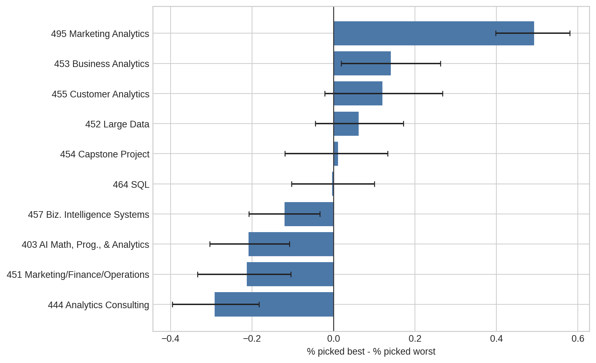
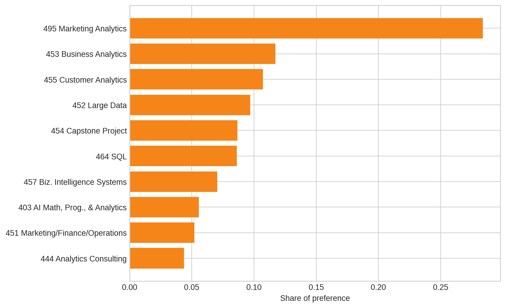
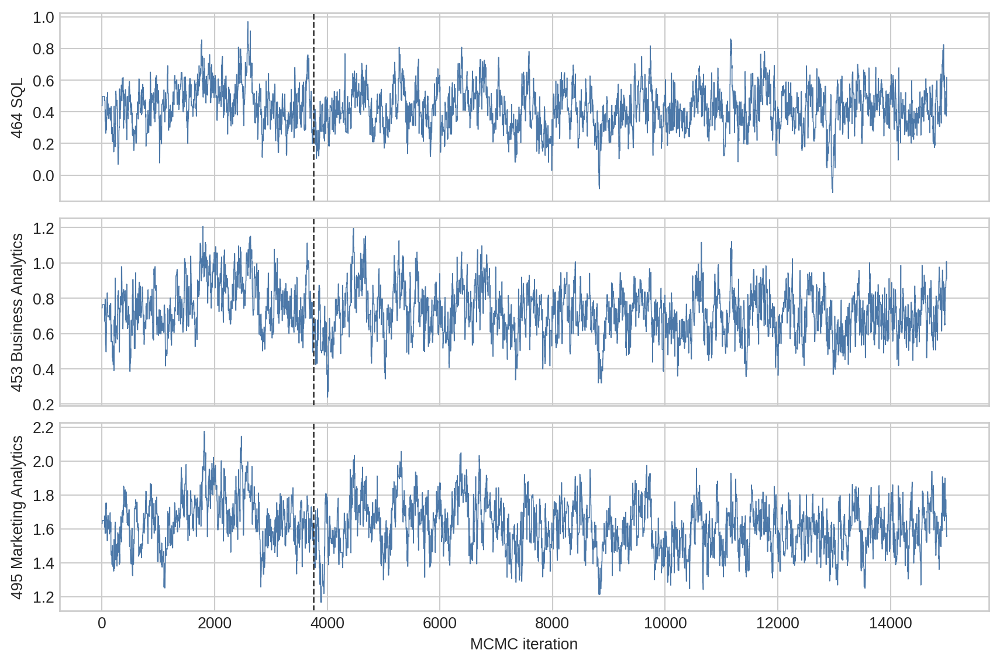
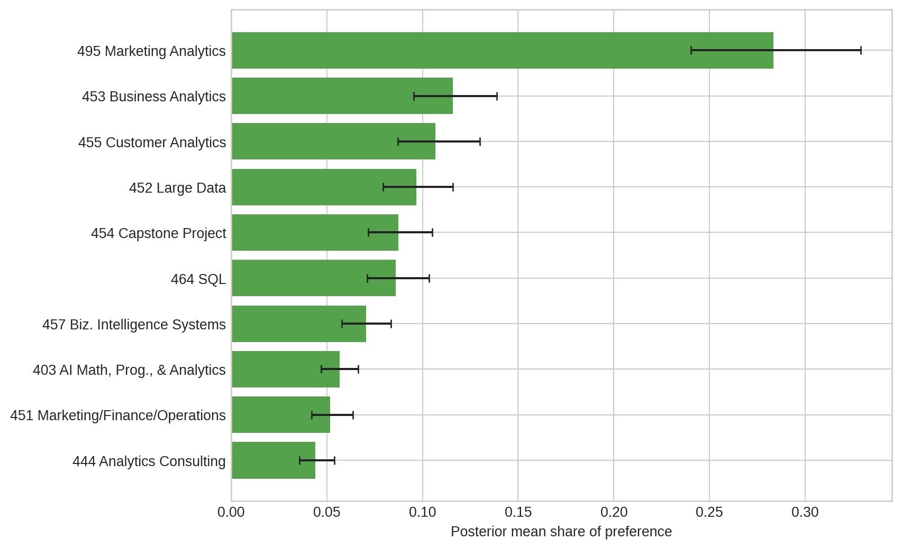
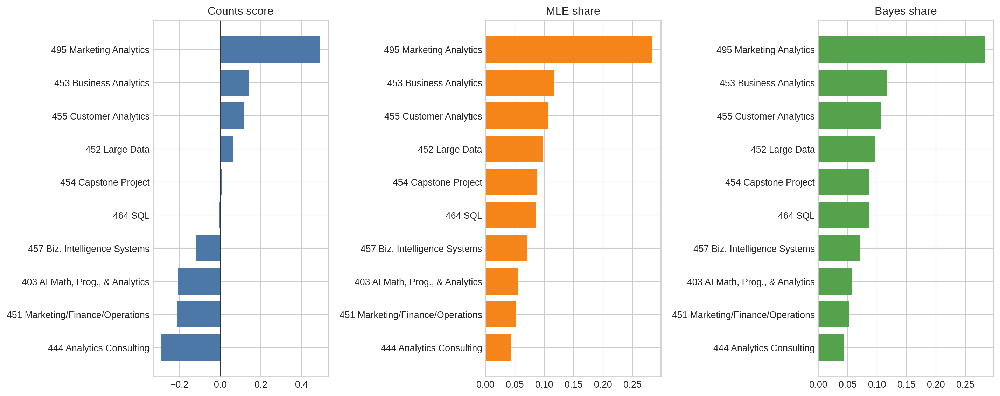

Show code
import numpy as np
import pandas as pd
import matplotlib.pyplot as plt
from scipy.optimize import minimize
plt.style.use("seaborn-v0_8-whitegrid")
np.random.seed(42)Counts, MLE, and Bayesian estimation of the MNL model
Joyi Zhang
May 31, 2026
MaxDiff, also called Best-Worst Scaling, is a survey method for measuring relative preferences. Instead of asking people to rate every option on a 1-10 scale, a MaxDiff task shows a small set of options and asks the respondent to choose the most preferred and least preferred item. In this survey, each screen showed 4 MSBA core classes, and students selected the class they liked most and least from that set.
This format is useful because people are often better at making trade-offs than at calibrating numeric ratings. A “7 out of 10” may mean different things to different people, but choosing the best and worst class from the same screen forces clearer differentiation.
In this post, I estimate student preferences for the 10 MSBA classes using three approaches:
I expect the three methods to agree on the broad ranking, especially at the top and bottom. The bigger differences should appear in the middle, where several classes have similar preference strength.
The main data file has one row per item shown in a MaxDiff task. The Response variable is coded as 1 for the best pick, -1 for the worst pick, and 0 for items that were shown but not selected. The label file maps the numeric item codes to class names.
choices = pd.read_csv("files/maxdiff_design_and_choices.csv")
labels = pd.read_csv("files/maxdiff_item_labels.csv")
choices.columns = [c.strip().replace("\ufeff", "") for c in choices.columns]
labels.columns = [c.strip().replace("\ufeff", "") for c in labels.columns]
choices = choices.rename(columns={
"Record ID": "record_id",
"Task": "task",
"Position": "position",
"Item": "item",
"Response": "response"
})
labels = (
labels[["Item #", "Item"]]
.rename(columns={"Item #": "item", "Item": "class"})
)
labels["short_class"] = (
labels["class"]
.str.replace(r" \(.*\)", "", regex=True)
.str.replace("MGTA ", "", regex=False)
)
choices.head()| record_id | task | position | item | response | |
|---|---|---|---|---|---|
| 0 | 69fb85fbd66b452e6decf4f7 | 1 | 1 | 5 | 0 |
| 1 | 69fb85fbd66b452e6decf4f7 | 1 | 2 | 7 | 1 |
| 2 | 69fb85fbd66b452e6decf4f7 | 1 | 3 | 4 | 0 |
| 3 | 69fb85fbd66b452e6decf4f7 | 1 | 4 | 1 | -1 |
| 4 | 69fb85fbd66b452e6decf4f7 | 2 | 1 | 8 | -1 |
task_checks = (
choices
.groupby(["record_id", "task"])
.agg(
rows=("item", "size"),
n_best=("response", lambda x: (x == 1).sum()),
n_worst=("response", lambda x: (x == -1).sum()),
n_zero=("response", lambda x: (x == 0).sum())
)
.reset_index()
)
summary = pd.DataFrame({
"Metric": [
"Respondents",
"Tasks per respondent, median",
"Rows in raw data",
"Labeled classes",
"Complete tasks"
],
"Value": [
choices["record_id"].nunique(),
task_checks.groupby("record_id")["task"].nunique().median(),
len(choices),
len(labels),
((task_checks["rows"] == 4) &
(task_checks["n_best"] == 1) &
(task_checks["n_worst"] == 1) &
(task_checks["n_zero"] == 2)).sum()
]
})
summary| Metric | Value | |
|---|---|---|
| 0 | Respondents | 85.0 |
| 1 | Tasks per respondent, median | 15.0 |
| 2 | Rows in raw data | 3910.0 |
| 3 | Labeled classes | 10.0 |
| 4 | Complete tasks | 680.0 |
| rows | n_best | n_worst | n_zero | n_tasks | |
|---|---|---|---|---|---|
| 1 | 2 | 1 | 0 | 1 | 595 |
| 0 | 4 | 1 | 1 | 2 | 680 |
The sanity check shows that 680 tasks have the intended MaxDiff structure: 4 rows, one best choice, one worst choice, and two unchosen alternatives. There are also 595 incomplete tasks with only 2 rows and no recorded worst choice. Because the MNL likelihood needs both the best and worst selections from a valid choice set, I use only the 680 complete tasks for the rest of the analysis.
complete_keys = task_checks.query(
"rows == 4 and n_best == 1 and n_worst == 1 and n_zero == 2"
)[["record_id", "task"]]
complete = choices.merge(complete_keys, on=["record_id", "task"])
shown_counts = (
complete
.groupby("item")
.size()
.reset_index(name="times_shown")
.merge(labels, on="item")
.sort_values("item")
)
shown_counts| item | times_shown | class | short_class | |
|---|---|---|---|---|
| 0 | 1 | 273 | MGTA 403 AI Math, Prog., & Analytics (Summer w... | 403 AI Math, Prog., & Analytics |
| 1 | 2 | 274 | MGTA 464 SQL (Summer with Nijs) | 464 SQL |
| 2 | 3 | 272 | MGTA 451 Marketing/Finance/Operations (Summer ... | 451 Marketing/Finance/Operations |
| 3 | 4 | 276 | MGTA 452 Large Data (Fall with Hansen) | 452 Large Data |
| 4 | 5 | 270 | MGTA 453 Business Analytics (Fall with August) | 453 Business Analytics |
| 5 | 6 | 267 | MGTA 444 Analytics Consulting (Winter with Pet... | 444 Analytics Consulting |
| 6 | 7 | 276 | MGTA 455 Customer Analytics (Winter with Nijs) | 455 Customer Analytics |
| 7 | 8 | 272 | MGTA 454 Capstone Project (Spring with Advisor) | 454 Capstone Project |
| 8 | 9 | 274 | MGTA 495 Marketing Analytics (Spring with Yavo... | 495 Marketing Analytics |
| 9 | 10 | 266 | MGTA 457 Biz. Intelligence Systems (Fall with ... | 457 Biz. Intelligence Systems |
The exposure counts are fairly balanced. Each class appears about 270 times in the complete tasks, so large differences in preference are unlikely to be driven simply by one class being shown more often.
The counts analysis is the simplest way to summarize MaxDiff data. For each class, I calculate the percent of times it was picked as best and subtract the percent of times it was picked as worst:
\[ \text{score}_j = \%\text{best}_j - \%\text{worst}_j. \]
A positive score means the class was chosen as best more often than worst. A negative score means the opposite.
counts = (
complete
.groupby("item")
.agg(
times_shown=("response", "size"),
times_best=("response", lambda x: (x == 1).sum()),
times_worst=("response", lambda x: (x == -1).sum())
)
.reset_index()
.merge(labels, on="item")
)
counts["pct_best"] = counts["times_best"] / counts["times_shown"]
counts["pct_worst"] = counts["times_worst"] / counts["times_shown"]
counts["counts_score"] = counts["pct_best"] - counts["pct_worst"]
counts["counts_rank"] = counts["counts_score"].rank(ascending=False, method="min").astype(int)
counts_table = (
counts
.sort_values("counts_score", ascending=False)
[[
"item", "class", "times_shown", "times_best", "times_worst",
"pct_best", "pct_worst", "counts_score", "counts_rank"
]]
)
counts_table| item | class | times_shown | times_best | times_worst | pct_best | pct_worst | counts_score | counts_rank | |
|---|---|---|---|---|---|---|---|---|---|
| 8 | 9 | MGTA 495 Marketing Analytics (Spring with Yavo... | 274 | 147 | 12 | 0.536496 | 0.043796 | 0.492701 | 1 |
| 4 | 5 | MGTA 453 Business Analytics (Fall with August) | 270 | 93 | 55 | 0.344444 | 0.203704 | 0.140741 | 2 |
| 6 | 7 | MGTA 455 Customer Analytics (Winter with Nijs) | 276 | 104 | 71 | 0.376812 | 0.257246 | 0.119565 | 3 |
| 3 | 4 | MGTA 452 Large Data (Fall with Hansen) | 276 | 77 | 60 | 0.278986 | 0.217391 | 0.061594 | 4 |
| 7 | 8 | MGTA 454 Capstone Project (Spring with Advisor) | 272 | 72 | 69 | 0.264706 | 0.253676 | 0.011029 | 5 |
| 1 | 2 | MGTA 464 SQL (Summer with Nijs) | 274 | 55 | 56 | 0.200730 | 0.204380 | -0.003650 | 6 |
| 9 | 10 | MGTA 457 Biz. Intelligence Systems (Fall with ... | 266 | 23 | 55 | 0.086466 | 0.206767 | -0.120301 | 7 |
| 0 | 1 | MGTA 403 AI Math, Prog., & Analytics (Summer w... | 273 | 33 | 90 | 0.120879 | 0.329670 | -0.208791 | 8 |
| 2 | 3 | MGTA 451 Marketing/Finance/Operations (Summer ... | 272 | 43 | 101 | 0.158088 | 0.371324 | -0.213235 | 9 |
| 5 | 6 | MGTA 444 Analytics Consulting (Winter with Pet... | 267 | 33 | 111 | 0.123596 | 0.415730 | -0.292135 | 10 |
def counts_score_for(data):
out = (
data
.groupby("item")
.agg(
times_shown=("response", "size"),
times_best=("response", lambda x: (x == 1).sum()),
times_worst=("response", lambda x: (x == -1).sum())
)
.reindex(labels["item"])
.fillna(0)
)
return (out["times_best"] / out["times_shown"]) - (out["times_worst"] / out["times_shown"])
respondents = complete["record_id"].unique()
respondent_groups = {rid: group for rid, group in complete.groupby("record_id")}
B = 500
boot_scores = np.empty((B, len(labels)))
for b in range(B):
sampled_ids = np.random.choice(respondents, size=len(respondents), replace=True)
boot_data = pd.concat([respondent_groups[rid] for rid in sampled_ids], ignore_index=True)
boot_scores[b, :] = counts_score_for(boot_data).to_numpy()
counts_ci = pd.DataFrame({
"item": labels["item"],
"counts_lo": np.nanquantile(boot_scores, 0.025, axis=0),
"counts_hi": np.nanquantile(boot_scores, 0.975, axis=0)
})
counts = counts.merge(counts_ci, on="item")plot_counts = counts.sort_values("counts_score")
fig, ax = plt.subplots(figsize=(9, 5.5))
ax.barh(plot_counts["short_class"], plot_counts["counts_score"], color="#4C78A8")
ax.errorbar(
plot_counts["counts_score"],
plot_counts["short_class"],
xerr=[
plot_counts["counts_score"] - plot_counts["counts_lo"],
plot_counts["counts_hi"] - plot_counts["counts_score"]
],
fmt="none",
ecolor="#222222",
capsize=3
)
ax.axvline(0, color="#333333", linewidth=1)
ax.set_xlabel("% picked best - % picked worst")
ax.set_ylabel("")
plt.tight_layout()
plt.show()
The counts ranking is very clear at the top: MGTA 495 Marketing Analytics is the most preferred class by a large margin. Business Analytics and Customer Analytics are next. The least preferred classes by this descriptive measure are Analytics Consulting, Marketing/Finance/Operations, and AI Math/Programming/Analytics.
The counts analysis is intuitive, but it does not explicitly model the choice process. The multinomial logit model does. In an MNL model, each class receives a utility coefficient \(\beta_j\). When a respondent sees a set of classes, the probability that class \(j\) is picked as best is:
\[ P(j \text{ is best}) = \frac{\exp(\beta_j)} {\sum_{k \in \text{shown}} \exp(\beta_k)}. \]
The worst choice can be treated as a second choice model with the utilities flipped. After removing the item chosen as best, the probability that item \(j\) is picked as worst is:
\[ P(j \text{ is worst} \mid \text{best}) = \frac{\exp(-\beta_j)} {\sum_{k \in \text{shown, } k \neq \text{best}} \exp(-\beta_k)}. \]
The model is identified only up to a constant: adding the same number to every \(\beta\) leaves the choice probabilities unchanged. I therefore set item 1 as the reference class with \(\beta_1 = 0\) and estimate the other 9 coefficients.
task_groups = list(complete.groupby(["record_id", "task"], sort=False))
shown = np.vstack([
group.sort_values("position")["item"].to_numpy(dtype=int) - 1
for _, group in task_groups
])
best = np.array([
int(group.loc[group["response"] == 1, "item"].iloc[0]) - 1
for _, group in task_groups
])
worst = np.array([
int(group.loc[group["response"] == -1, "item"].iloc[0]) - 1
for _, group in task_groups
])
not_best_mask = shown != best[:, None]
shown[:3], best[:3], worst[:3](array([[4, 6, 3, 0],
[7, 2, 9, 8],
[2, 4, 1, 5]]),
array([6, 9, 1]),
array([0, 7, 5]))For each task, the log-likelihood is the log probability of the observed best choice plus the log probability of the observed worst choice:
\[ \ell(\boldsymbol{\beta}) = \sum_{\text{tasks}} \left[ \beta_{j_b^*} - \log \sum_{j \in \text{shown}} \exp(\beta_j) - \beta_{j_w^*} - \log \sum_{j \in \text{shown} \setminus j_b^*} \exp(-\beta_j) \right]. \]
I maximize this likelihood with scipy.optimize.minimize, which is the Python equivalent of using optim() in R.
def full_beta(beta_free):
return np.r_[0, beta_free]
def logsumexp_rows(values):
row_max = np.max(values, axis=1, keepdims=True)
return (row_max + np.log(np.exp(values - row_max).sum(axis=1, keepdims=True))).ravel()
def ll(beta_free):
beta = full_beta(beta_free)
best_part = beta[best] - logsumexp_rows(beta[shown])
negative_utilities = -beta[shown]
remaining_after_best = negative_utilities[not_best_mask].reshape(len(shown), 3)
worst_part = -beta[worst] - logsumexp_rows(remaining_after_best)
return (best_part + worst_part).sum()mle_out = minimize(
fun=lambda beta_free: -ll(beta_free),
x0=np.zeros(9),
method="BFGS",
options={"gtol": 1e-4, "maxiter": 1000}
)
beta_mle = full_beta(mle_out.x)
se_mle = np.r_[np.nan, np.sqrt(np.diag(np.asarray(mle_out.hess_inv)))]
share_mle = np.exp(beta_mle) / np.exp(beta_mle).sum()
mle_results = (
pd.DataFrame({
"item": np.arange(1, 11),
"beta_mle": beta_mle,
"se_mle": se_mle,
"mle_share": share_mle
})
.merge(labels, on="item")
)
mle_results["mle_rank"] = mle_results["mle_share"].rank(ascending=False, method="min").astype(int)
pd.DataFrame({
"Optimizer converged": [mle_out.success],
"Log likelihood": [ll(mle_out.x)]
})| Optimizer converged | Log likelihood | |
|---|---|---|
| 0 | True | -1572.730733 |
| item | class | beta_mle | se_mle | mle_share | mle_rank | |
|---|---|---|---|---|---|---|
| 8 | 9 | MGTA 495 Marketing Analytics (Spring with Yavo... | 1.629802 | 0.143467 | 0.283890 | 1 |
| 4 | 5 | MGTA 453 Business Analytics (Fall with August) | 0.744467 | 0.140020 | 0.117126 | 2 |
| 6 | 7 | MGTA 455 Customer Analytics (Winter with Nijs) | 0.656263 | 0.140281 | 0.107238 | 3 |
| 3 | 4 | MGTA 452 Large Data (Fall with Hansen) | 0.555301 | 0.138134 | 0.096939 | 4 |
| 7 | 8 | MGTA 454 Capstone Project (Spring with Advisor) | 0.443279 | 0.137900 | 0.086666 | 5 |
| 1 | 2 | MGTA 464 SQL (Summer with Nijs) | 0.438010 | 0.135557 | 0.086211 | 6 |
| 9 | 10 | MGTA 457 Biz. Intelligence Systems (Fall with ... | 0.235900 | 0.134901 | 0.070435 | 7 |
| 0 | 1 | MGTA 403 AI Math, Prog., & Analytics (Summer w... | 0.000000 | NaN | 0.055634 | 8 |
| 2 | 3 | MGTA 451 Marketing/Finance/Operations (Summer ... | -0.066646 | 0.137091 | 0.052047 | 9 |
| 5 | 6 | MGTA 444 Analytics Consulting (Winter with Pet... | -0.238824 | 0.138170 | 0.043814 | 10 |

The MLE ranking is very similar to the counts ranking. Marketing Analytics is again first by a wide margin, followed by Business Analytics and Customer Analytics. The middle of the ranking is tighter: Large Data, Capstone, and SQL are relatively close, so small modeling differences can shift the exact order.
For the Bayesian version, I use the same likelihood but add a weakly informative normal prior:
\[ \boldsymbol{\beta} \sim N(\boldsymbol{0}, 10I). \]
The posterior is proportional to likelihood times prior:
\[ \pi(\boldsymbol{\beta} \mid y) \propto L(\boldsymbol{\beta})\pi(\boldsymbol{\beta}). \]
I sample from this posterior with a random-walk Metropolis-Hastings algorithm. I start the chain at the MLE because it is a high-likelihood region, then use a normal proposal step. I tuned the step size to 0.08, which gives an acceptance rate in the target range of about 25-40%.
def log_prior(beta_free):
return np.sum(-0.5 * np.log(2 * np.pi * 10) - (beta_free ** 2) / (2 * 10))
def log_post(beta_free):
return ll(beta_free) + log_prior(beta_free)
def metropolis(beta0, n_iter=15000, step=0.08, seed=42):
rng = np.random.default_rng(seed)
draws = np.empty((n_iter, len(beta0)))
beta = beta0.copy()
lp = log_post(beta)
accept = 0
for t in range(n_iter):
proposal = beta + rng.normal(0, step, len(beta))
proposal_lp = log_post(proposal)
if np.log(rng.random()) < proposal_lp - lp:
beta = proposal
lp = proposal_lp
accept += 1
draws[t] = beta
return draws, accept / n_iterdraws, accept_rate = metropolis(mle_out.x, n_iter=15000, step=0.08, seed=42)
burn = int(0.25 * len(draws))
post = draws[burn:]
post_full = np.column_stack([np.zeros(len(post)), post])
post_shares = np.exp(post_full) / np.exp(post_full).sum(axis=1, keepdims=True)
bayes_results = (
pd.DataFrame({
"item": np.arange(1, 11),
"beta_post_mean": post_full.mean(axis=0),
"beta_ci_low": np.quantile(post_full, 0.025, axis=0),
"beta_ci_high": np.quantile(post_full, 0.975, axis=0),
"bayes_share": post_shares.mean(axis=0),
"share_ci_low": np.quantile(post_shares, 0.025, axis=0),
"share_ci_high": np.quantile(post_shares, 0.975, axis=0)
})
.merge(labels, on="item")
)
bayes_results["bayes_rank"] = bayes_results["bayes_share"].rank(ascending=False, method="min").astype(int)
pd.DataFrame({"Acceptance rate": [accept_rate], "Burn-in draws": [burn], "Posterior draws kept": [len(post)]})| Acceptance rate | Burn-in draws | Posterior draws kept | |
|---|---|---|---|
| 0 | 0.288067 | 3750 | 11250 |
trace_items = [2, 5, 9]
fig, axes = plt.subplots(len(trace_items), 1, figsize=(9, 6), sharex=True)
for ax, item_id in zip(axes, trace_items):
col = item_id - 2
ax.plot(draws[:, col], color="#4C78A8", linewidth=0.6)
ax.axvline(burn, color="#333333", linestyle="--", linewidth=1)
ax.set_ylabel(labels.loc[labels["item"] == item_id, "short_class"].iloc[0])
axes[-1].set_xlabel("MCMC iteration")
plt.tight_layout()
plt.show()
| item | class | beta_post_mean | beta_ci_low | beta_ci_high | bayes_share | share_ci_low | share_ci_high | bayes_rank | |
|---|---|---|---|---|---|---|---|---|---|
| 8 | 9 | MGTA 495 Marketing Analytics (Spring with Yavo... | 1.607409 | 1.338490 | 1.890143 | 0.283479 | 0.240131 | 0.328933 | 1 |
| 4 | 5 | MGTA 453 Business Analytics (Fall with August) | 0.712022 | 0.455945 | 0.970203 | 0.115915 | 0.095318 | 0.138913 | 2 |
| 6 | 7 | MGTA 455 Customer Analytics (Winter with Nijs) | 0.629271 | 0.367985 | 0.890115 | 0.106756 | 0.087068 | 0.129931 | 3 |
| 3 | 4 | MGTA 452 Large Data (Fall with Hansen) | 0.531699 | 0.270056 | 0.797729 | 0.096820 | 0.079294 | 0.115921 | 4 |
| 7 | 8 | MGTA 454 Capstone Project (Spring with Advisor) | 0.428683 | 0.180216 | 0.690753 | 0.087341 | 0.071762 | 0.105020 | 5 |
| 1 | 2 | MGTA 464 SQL (Summer with Nijs) | 0.415191 | 0.166897 | 0.666271 | 0.086161 | 0.071222 | 0.103448 | 6 |
| 9 | 10 | MGTA 457 Biz. Intelligence Systems (Fall with ... | 0.217328 | -0.029198 | 0.460354 | 0.070675 | 0.057719 | 0.083579 | 7 |
| 0 | 1 | MGTA 403 AI Math, Prog., & Analytics (Summer w... | 0.000000 | 0.000000 | 0.000000 | 0.056852 | 0.046963 | 0.066448 | 8 |
| 2 | 3 | MGTA 451 Marketing/Finance/Operations (Summer ... | -0.092681 | -0.342116 | 0.160556 | 0.051895 | 0.041999 | 0.063724 | 9 |
| 5 | 6 | MGTA 444 Analytics Consulting (Winter with Pet... | -0.255347 | -0.517638 | 0.000803 | 0.044105 | 0.035718 | 0.053944 | 10 |
plot_bayes = bayes_results.sort_values("bayes_share")
fig, ax = plt.subplots(figsize=(9, 5.5))
ax.barh(plot_bayes["short_class"], plot_bayes["bayes_share"], color="#54A24B")
ax.errorbar(
plot_bayes["bayes_share"],
plot_bayes["short_class"],
xerr=[
plot_bayes["bayes_share"] - plot_bayes["share_ci_low"],
plot_bayes["share_ci_high"] - plot_bayes["bayes_share"]
],
fmt="none",
ecolor="#222222",
capsize=3
)
ax.set_xlabel("Posterior mean share of preference")
ax.set_ylabel("")
plt.tight_layout()
plt.show()
The Bayesian posterior means are very close to the MLE point estimates. That is what I would expect because the sample has hundreds of complete tasks and the prior is weak. The main advantage of the Bayesian approach is that uncertainty for derived quantities, such as shares of preference, is easy to compute: each posterior draw is transformed into shares, and the credible interval comes directly from those simulated shares.
The table below puts the three approaches together. The counts score is on a different scale from the MNL shares, but the rankings can be compared directly.
comparison = (
counts[["item", "class", "short_class", "counts_score", "counts_rank"]]
.merge(mle_results[["item", "mle_share", "mle_rank"]], on="item")
.merge(bayes_results[["item", "bayes_share", "bayes_rank"]], on="item")
.sort_values("mle_rank")
)
comparison[
["item", "class", "counts_score", "counts_rank", "mle_share", "mle_rank", "bayes_share", "bayes_rank"]
]| item | class | counts_score | counts_rank | mle_share | mle_rank | bayes_share | bayes_rank | |
|---|---|---|---|---|---|---|---|---|
| 8 | 9 | MGTA 495 Marketing Analytics (Spring with Yavo... | 0.492701 | 1 | 0.283890 | 1 | 0.283479 | 1 |
| 4 | 5 | MGTA 453 Business Analytics (Fall with August) | 0.140741 | 2 | 0.117126 | 2 | 0.115915 | 2 |
| 6 | 7 | MGTA 455 Customer Analytics (Winter with Nijs) | 0.119565 | 3 | 0.107238 | 3 | 0.106756 | 3 |
| 3 | 4 | MGTA 452 Large Data (Fall with Hansen) | 0.061594 | 4 | 0.096939 | 4 | 0.096820 | 4 |
| 7 | 8 | MGTA 454 Capstone Project (Spring with Advisor) | 0.011029 | 5 | 0.086666 | 5 | 0.087341 | 5 |
| 1 | 2 | MGTA 464 SQL (Summer with Nijs) | -0.003650 | 6 | 0.086211 | 6 | 0.086161 | 6 |
| 9 | 10 | MGTA 457 Biz. Intelligence Systems (Fall with ... | -0.120301 | 7 | 0.070435 | 7 | 0.070675 | 7 |
| 0 | 1 | MGTA 403 AI Math, Prog., & Analytics (Summer w... | -0.208791 | 8 | 0.055634 | 8 | 0.056852 | 8 |
| 2 | 3 | MGTA 451 Marketing/Finance/Operations (Summer ... | -0.213235 | 9 | 0.052047 | 9 | 0.051895 | 9 |
| 5 | 6 | MGTA 444 Analytics Consulting (Winter with Pet... | -0.292135 | 10 | 0.043814 | 10 | 0.044105 | 10 |
fig, axes = plt.subplots(1, 3, figsize=(15, 6))
methods = [
("counts_score", "Counts score", "#4C78A8"),
("mle_share", "MLE share", "#F58518"),
("bayes_share", "Bayes share", "#54A24B")
]
for ax, (column, title, color) in zip(axes, methods):
data = comparison.sort_values(column)
ax.barh(data["short_class"], data[column], color=color)
ax.set_title(title)
ax.set_ylabel("")
if column == "counts_score":
ax.axvline(0, color="#333333", linewidth=1)
plt.tight_layout()
plt.show()
All three methods agree strongly on the most preferred class: MGTA 495 Marketing Analytics. They also agree that Business Analytics and Customer Analytics are near the top, and that Analytics Consulting, Marketing/Finance/Operations, and AI Math/Programming/Analytics are near the bottom.
The biggest differences are in the middle. For example, Large Data, Capstone, and SQL have relatively similar MNL shares. When items are this close, small changes in the model or sampling variation can move a class up or down by one rank. This is a useful reminder that ranks can look more precise than the underlying estimates really are.
Compared with counts, the MNL model adds a clearer behavioral model of choice. It uses the full choice set on each task, not just the raw number of best and worst selections. Compared with MLE, the Bayesian version makes it easier to describe uncertainty for nonlinear quantities like shares of preference.
Substantively, the main finding is that students in this survey most preferred Marketing Analytics. Business Analytics and Customer Analytics also performed well, which suggests that applied analytics classes with clear business relevance are especially attractive to this group. At the lower end, Analytics Consulting and Marketing/Finance/Operations were selected as worst more often than best in the complete tasks.
Methodologically, each approach has a different use case. Counts are fast, transparent, and easy to explain in a dashboard. MLE MNL is better when I want a formal model, point estimates, and standard errors. Bayesian MNL is most helpful when I want uncertainty intervals for transformed quantities, or if I later want to extend the model to estimate individual-level preferences.
There are also caveats. The data come from a self-selected sample of MSBA students, so the results should not be generalized to every student. Preferences may depend on prior coursework, career goals, instructor familiarity, and where students are in the program. If I had more time, I would explore respondent-level heterogeneity: for example, whether students with more technical backgrounds rank programming-heavy classes differently from students with more business-oriented backgrounds.